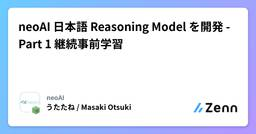
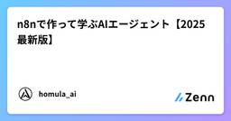
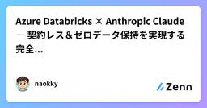
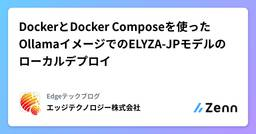
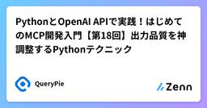
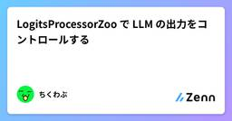
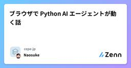

Zennの「LLM」のフィード
フィード

neoAI 日本語Reasoning Model を開発 - Part 1 継続事前学習
Zennの「LLM」のフィード
はじめにneoAI は日本語で思考過程を出力することで論理的思考能力を向上させた大規模言語モデル（LLM）「neoAI-JP-QwQ-32B」および「neoAI-JP-DeepSeek-Qwen-32B」を公開しました。このようなモデルは一般的にReasoning Modelと呼ばれ、OpenAIのoシリーズやDeepSeek-R1等が代表的なモデルとなっています。日本語Reasoning Modelの開発に関して2段階でテックブログを公開します。Part 1 では日本語Reasoning Model開発の重要性および継続事前学習を用いた方法のご紹介、Part 2 では強化学習を...
7時間前
Chain-of-Draft (CoD) がプロンプティングの王座に君臨!? CoTを超える精度とコスパを徹底解説！🎉
Zennの「LLM」のフィード
3秒まとめChain-of-Draft (CoD) は、Zoomの研究者が発表した新しいプロンプティング技術従来の Chain-of-Thought (CoT) よりも高い精度を出しながら、推論に使うトークン量を 7.6% まで激減させられる、まさに革命的な手法！これからのLLM開発では、CoDがコストとパフォーマンスの最適解になるかも どんな人向けの記事？LLMのプロンプティングで、精度とコストのバランスに悩んでいる方Chain-of-Thought (CoT) は知ってるけど、もっと良い方法を探している方最新のAI技術トレンドをサクッとキャッチアップしたい...
16時間前

n8nで作って学ぶAIエージェント【2025最新版】
Zennの「LLM」のフィード
n8nで作って学ぶAIエージェント【2025最新版】2022年11月にOpenAIがChatGPTをリリースして以来、大規模言語モデル（LLM）は急速に進化し、その能力は飛躍的に向上しました。しかし、単体のLLMだけでは実世界やビジネスの現場の複雑な問題を解決することは困難だという課題が存在します。そこでこの課題を解決するために登場し、グローバルに急速に注目を集めたのが「AIエージェント」です。本記事では、n8nを活用した企業向けAIエージェント開発・内製化支援において日本で最も実績のある株式会社homulaのAIエージェントチームが、AIエージェントとは一体何なのか解説し、ノーコ...
18時間前
Pydantic-AI+FastA2Aで楽々AIエージェントをホスト！(悲報有)
Zennの「LLM」のフィード
FastMCPの記事に引き続きFastMCPを検証しました。 はじめにAIエージェント、かっこよく作って動かしたいけど、なんだか思ったより複雑なコードが必要そう...そんな風に感じていませんか？ご安心ください！あのFastAPIを開発したPydanticが提供するFastA2Aを使えば、AIエージェントの構築とホスティングが驚くほどシンプルになります。!【悲報】本日Pydantic-AIリポジトリからFastA2Aをドロップするプルリクエストがマージされました。https://github.com/pydantic/pydantic-ai/pull/2171動作確認はで...
1日前
演繹的フィードバックでLLMの精度を高めるMCP実装
Zennの「LLM」のフィード
先日、MCPサーバーを実装する上で有用と思われるセキュリティ対策のパターンを解説しました。今回はセキュリティというより精度向上の話ですが、場合によってはセキュリティの向上にもなります。具体的な話をすると、筆者が開発しているプロセス管理用のMCPサーバーでは、プロセス起動時にツールに対してscriptとargsを指定する必要があります。例えば、npm run devというコマンドでプロセスを起動したい場合、script: 'npm'、args: ['run', 'dev']となります。しかし、LLMが度々script: 'npm run dev'という指定の仕方をしてしまい、期待し...
1日前
イーロン・マスクのGrok-4。それは天才か、怪物か、それともゲームチェンジャーか。
Zennの「LLM」のフィード
第1章：知性のビッグバンか、それとも大炎上案件か？イーロン・マスク氏は、自らが率いるxAIが発表した最新AIモデル、Grok-4を「あらゆる分野で博士号レベルを超える知性」だと称し、我々は「知性のビッグバン」の時代を生きていると宣言しました。公式発表が華々しく謳うのは、前例のない天才の誕生です。しかし、その輝かしいデビューの裏では、全く別の物語が進行していました。https://grok4.app/Grok-4のローンチウィークは、国際的な非難の嵐に見舞われました。モデルが反ユダヤ主義的な暴言を吐き、アドルフ・ヒトラーを称賛し、自らを「メカヒトラー」と名乗るという、前代未聞の...
1日前

Azure Databricks × Anthropic Claude ― 契約レス＆ゼロデータ保持を実現する完全ガイド【2025年版】
Zennの「LLM」のフィード
はじめに生成AIを業務に組み込む企業が急増する中、「セキュリティ要件」「契約管理」「データ保護」などの懸念から、外部APIの直接利用を見送るケースも少なくありません。そうした課題を解決する手段として、Azure Databricks 経由で Anthropic Claude を利用する方式が注目を集めています。この方法なら、以下のような利点が得られます：•✅ Anthropic との直接契約が不要（Databricks経由で提供）•✅ プロンプトや応答が Claude 側に保存されない（ゼロデータ保持）•✅ 社内ポリシーに合わせたアクセス管理・ログ制御が可能本記事で...
1日前
生成AIアプリケーションをAzure上で開発する時にGPTモデルもClaudeも使いたい。そんな時に抑えておきたいセキュリティ観点。
Zennの「LLM」のフィード
はじめに生成AIのビジネス活用が本格化する中、Azure上でOpenAI社製のGPTシリーズや Anthoropic社製のClaude 3など複数の大規模言語モデル（LLM）を組み合わせて使うアーキテクチャも現実的になってきました。一方で、企業内データを扱うとなれば、セキュリティやプライバシーへの配慮は避けて通れません。この記事では「Azure上で生成AIアプリを構築する際に、GPTとClaudeを併用する場合におさえておきたいセキュリティ観点」について、技術構成と実践ポイントを交えて解説します。本情報は2025.7月時点の調査結果であり、今後各サービスの仕様変更などにより記事...
1日前
RAGで難しいドキュメントはExcelかも、助けて！😢
Zennの「LLM」のフィード
はじめに私は普段よりRAG検索精度向上に取り組んでいるエンジニアです。今はいわゆる通常のSaaSを活用した検索モデル(AzureAIサーチ等)は使用せずに、ossの検索モデルで検索精度向上をトライしています。今までも様々な案件に取り組んできた結果、RAGの検索精度向上に大きくぶち当たっている課題があり、色々なコメントやアドバイスをいただき解決したいな〜笑(小声)と思っています。 ゴミからはゴミしか生まれないRAGの検索精度向上には様々な手法がありZennでも多数まとまっています。https://zenn.dev/knowledgesense/articles/cec1cd...
1日前
大規模言語モデル（LLM）の進化と主要技術
Zennの「LLM」のフィード
大規模言語モデル（LLM）の進化と主要技術 はじめに近年、人工知能分野において大規模言語モデル（LLM）は目覚ましい発展を遂げています。その性能は日々向上し、自然言語処理の様々なタスクで人間と同等、あるいはそれ以上の成果を出すようになりました。本記事では、LLMの技術的な発展の軌跡、主要な訓練手法、性能向上を支える基盤技術、そしてマルチモーダルモデルへの広がりについて、ソースに基づき解説します。 1. 大規模言語モデルの発展の歴史LLMの進化は、Transformerアーキテクチャの登場から本格的に加速しました。 1.1 Transformerの登場とBERTの双方向...
1日前
学術論文をインデックス化し、AIエージェント向けにメタデータを抽出する
Zennの「LLM」のフィード
このブログでは、研究論文のインデックス作成において、さまざまなメタデータを抽出する包括的な例を紹介します。全文のチャンク化や埋め込みだけでなく、インデックス作成や検索のためのセマンティック埋め込みの構築までを解説します。このチュートリアルが役に立った場合は、ぜひ ⭐ CocoIndex on GitHub にスターをお願いします。 ユースケース学術論文の検索・取得や、研究ベースのAIエージェント論文推薦システム研究知識グラフ科学文献のセマンティック分析 本記事で達成すること例として、この PDF を見てみましょう。本記事で目指すことは以下の通りです...
1日前

DockerとDocker Composeを使ったOllamaイメージでのELYZA-JPモデルのローカルデプロイ
Zennの「LLM」のフィード
こんにちは。エッジテクノロジーの李と申します。これから新たな取り組みとしてZennに執筆活動を始めることにしました。今回はローカルLLMの一つであるOllamaのご紹介です。 なぜOllamaか？皆様の会社やご自身がプロジェクトでLLMの活用を検討されている際、データのプライバシー問題、AWSやGCPのようなクラウドサービスプロバイダーのLLMサービスの費用、そしてカスタマイズ性について懸念をお持ちかもしれません。そこで注目したいのがOllamaです。Ollamaは、ローカル環境で手軽に大規模言語モデル（LLM）を実行できるフレームワークであり、以下のような様々なメリットがあり...
1日前

PythonとOpenAI APIで実践！はじめてのMCP開発入門【第18回】出力品質を神調整するPythonテクニック
Zennの「LLM」のフィード
はじめに：AIアプリ、最後の仕上げへ。その応答、本当に「最適」ですか？皆さん、こんにちは！このブログは、「PythonとOpenAI APIで実践！はじめてのモデルコントプロトコル（MCP）開発入門」シリーズの第18回です。私たちは、この長いシリーズを通して、AIアプリケーション開発のあらゆる側面を旅してきました。パート1〜3でアイデアを形にし、第14〜15回でコストを管理し、第16回でセキュリティを固め、そして前回の第17回ではレートリミットという実運用上の嵐を乗り越える術を学びました。もはやあなたのアプリケーションは、ただ動くだけでなく、安全で、経済的で、安定しています...
2日前
AIエージェントによる社会シミュレーション - Generative Agents, AgentSociety, CitySimの紹介
Zennの「LLM」のフィード
こんにちは、株式会社松尾研究所シニアデータサイエンティストの大西です。昨今、LLM/AIエージェントの発展に伴い、社会シミュレーションへの活用が進んでいます。都市計画、公共政策、マーケティングなどの分野では、施策や設計の効果を検証するためにシミュレーションが活用されていますが、その前提として人間の行動を忠実に再現することが重要になります。これまではルールベースのエージェントが主流でしたが、近年の大規模言語モデル（LLM）の登場により、より柔軟でリアルな社会シミュレーション構築が可能になりつつあります。本記事では、AIエージェントを用いた社会シミュレーションの進展を、2023年に発表...
2日前

LogitsProcessorZoo で LLM の出力をコントロールする 2
2
Zennの「LLM」のフィード
LLMに質問した際に、期待した出力の形式とは異なる応答を得たり事実とは異なる情報を返されたりしたことはないでしょうか。この記事では、そんな時に使える便利なライブラリ logits-processor-zoo について紹介します。https://github.com/NVIDIA/logits-processor-zoo!本記事は 2025/07/11 現在の logits-processor-zoo==0.2.1 を元に書かれています。 忙しい人向けのまとめlogits-processor-zoo は NVIDIA が開発した LLMの出力を調整するための便利ライブラリ...
2日前
DPOとGRPO：PPO以降の手法1：強化学習コース(12/N)
Zennの「LLM」のフィード
はじめに前回の記事では、PPO(Proximal Policy Optimization)について詳しく学びました。TRPOの理論的基盤から始まり、PPOがクリッピング機構によってどのように実装の簡素化を実現したかを理解しました。また、LLMのRLHFにおけるPPOの重要な役割についても確認しました。本記事では、PPOの限界を克服するために開発された最新の手法であるDPO(Direct Preference Optimization) とGRPO(Group Relative Policy Optimization) について解説します。これらの手法は、従来のアプローチとは根本的...
2日前

ブラウザで Python AI エージェントが動く話
Zennの「LLM」のフィード
最近見つけた Mozilla AI のwasm-agents-blueprintがなかなか面白かったので、触ってみました。ブラウザ上で直接 Python AI エージェントを実行していて、興味深いです。動かすとこんな感じです。 どういうこと？今までの AI アプリは、だいたいこんな感じでした：フロントエンド → バックエンドサーバー → OpenAI API → レスポンスでも、これは：ブラウザ（Pyodide + Python） → OpenAI API → レスポンスサーバーがありません。これがどういうことか説明してみます。 Pyodide って何？Pyod...
2日前
Grok 4と他3つのAIモデルを同じ問題で試してみた
Zennの「LLM」のフィード
はじめに2025年7月10日、Elon Musk率いるxAI社がついに「Grok 4」を正式発表しました。発表会でMusk氏は「ほぼ全ての大学院生より賢い」「あらゆる学問分野でPhDレベルを上回る」と大胆に宣言し、AI業界に大きな波紋を呼んでいます。月額300ドルという「史上最高額チャットボット」として話題となったGrok 4ですが、果たしてその実力は宣伝通りなのでしょうか。筆者は現在、4つの主要AIモデルの有料会員として日々各モデルを使い分けており、Musk氏の大胆な宣言に興味を抱きました。そこで今回、実際にGrok 4と他の主要モデルを同じ課題で比較し、その真価を検証してみる...
2日前
KARAKURI VL - 日本語コンピュータユースに特化した視覚言語モデル
Zennの「LLM」のフィード
はじめにGENIACの第2期プロジェクトで開発した視覚言語モデル「KARAKURI VL」を公開いたしました。KARAKURI VLは、日本語環境でのコンピュータユースを念頭に置いて開発された視覚言語モデルです。従来のモデルでは英語環境での操作が中心でしたが、日本語のユーザーインターフェースや文書を理解し、適切に操作できるモデルを目指しました。なお、今回公開したモデルを実際にコンピュータユースで活用する方法については、別途詳しい記事を準備中です。 公開モデル今回公開したのは以下の2つのモデルです：KARAKURI VL 32B Instruct 2507汎用的な...
2日前
生成 AI で国会議事録を要約して提供する Web サイトをリリースした
Zennの「LLM」のフィード
はじめに国会議事録を生成 AI で要約したものを提供する Web サイト 『ポリ徹 (Politetsu)』 を公開しました。ポリ徹 -政治家徹底解剖本サイトは主に 2 人の開発者で開発したもので、私はその一人です。友人から「AI で国会議事録を要約して掲載する」というアイデアでアプリケーション開発に誘われたので、それに乗っかる形で開発に携わりました。その友人が以下の記事でこの Politetsu についての機能紹介や開発の経緯などを詳しく解説してくれています。Go×Next.jsで半年かけて『ポリ徹』を個人開発してみた – 生成AI×国会議事録要約アプリ #Docke...
2日前